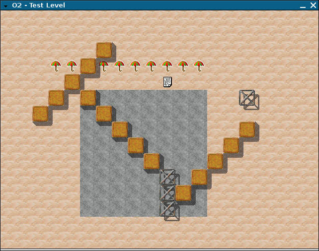
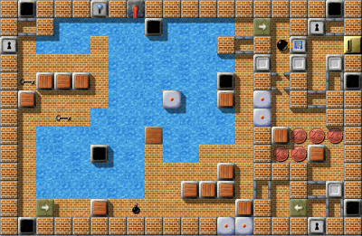
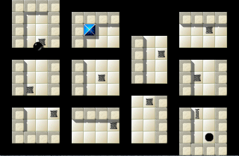
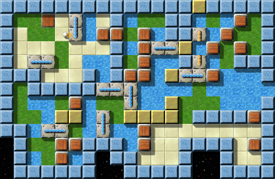
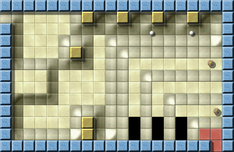

Results of the general questionsTo maintain the tension, we start with the more general statistics: All in all, we registered 741 clicks; 73 users and up to 40 votes per question, which gives us a broad insight in how our pro-gamers play. And slightly more than half of all voters requested the German questionnaire. Most people (42%) came to Enigma during version 0.8x. I remember that I was one of them, I found Enigma packed with SuSE, surfed the net and saw that Enigma 0.92 was already there. A remarkable majority of 69% of all players use Windows 2000 or XP, often together with some Linux. The preferred Linux versions are Debian and Ubuntu. Another fascinating aspect is that around twice as many gamers use Windows 95/98 or ME (6 of 39) than Vista (3 of 39). 3 of 39 gamers use Mac OS ("Tiger" 1 vs. "Panther" 2). One gamer uses (in addition to Windows) a completely different operating system, and I'm still wondering which system this might be … Finally, 2 of 39 use a dualcore, and 1 uses a gp2x. The usage rates of 95/98/ME and Panther shows us that we need to speed optimize Enigma to keep it running seamlessly even on computers which are a few years old, and that we need to continue support for these systems for the upcoming releases. A quite polarizing question focused on the difficulty of the levels. We got 37 answers to this question, and about the half (16) states that the difficulty is okay the way it is. However, 9 claimed the levels should be easier, while 3 gamers wanted them to be more difficult. The opinions on the scattering of the difficulty varied widely - 8 want it to be less scattered, 6 say it should be more so. Next, we asked for people's favorite kind of levels, and here the community found some common ground: Large majorities (over 50%) prefer small, quickly playable puzzle levels and levels that explore new combinations and gaming objects. Some 38% like large adventure levels, and only a minority of 14% would like to see more dexterity-levels or levels with large, difficult puzzles. 32% would like to see more levels of "other types", and unfortunately I'm unsure which types this might be. I'm surprised (and personally rather happy) about this outcome, though it shows that the "Level of the Month" is not necessarily the most popular. Of course, all level authors are still free to program their favorite kind of levels - however these statistics might offer some direction. Most gamers (more than 76%) seriously tried to solve at least half of all levels. Still, nearly one third try to solve all of them, regardless of type! That's some very important figure for us, as it might help to gauge the PAR values and to better understand the ratings. We all know the importance of the mag-heut.net-forum to Enigma's community. This is reflected by the answers to our next question about the importance of various information channels: From 1 to 5 points, the forum reached an average of 4.097, the homepage followed with 4.059. The other channels were of far less importance: the developer mailing list (2.86), private communication (2.75), other (2.4), announcement mailing list (2.14) and the yahoo oxyd group (1.58). This confirmed our assumptions. We also asked you for your opinions about the future development of Enigma, and asked you to rate several topics. The results were quite difficult to evaluate, particularly as 9 of the 34 votes did not include all topics - but as an overall result, many new levels should have the highest priority, followed by a level editor, new objects (remember that many gamers would like to see more levels to explore new objects and features) and bug-fixes. Of medium priority are the netplay mode, backstage info (incl. LotM), and a save-system for exploration. Far behind we found the urge for new graphics and sounds, for tournaments and ports of Enigma to other platforms. Surely, it's difficult to assign priorities to topics we would all like to have - however, I find these data quite interesting, though it will only have a minor influence on our short-termed plans. We also got lots of nice, encouraging comments, thanks to all of you for these! :-) "It's really the levels that reward us, and not the other way around"The following is a very special comment:
Enigma 0.22 was finished on December 30, 2001: it was a small
development snapshot I created for backup purposes, almost three
months before the first public release. The main reason Enigma 0.22
never left my hard drive is that there wasn't anything to play yet: I
hadn't even started to program the black marble and its interaction
with the other game objects. But the graphics for some game objects
like dynamite, bombs and the umbrella were already in place (and
haven't changed much since then) and there was one single ``level'' I
had created for testing. So, here it is, the Level of the Year 2001:

Level of the Year 2001
For the technically interested readers, here is the source file of
this first level:
(o2-create-world "Test Level" 40 40)
(draw-stones "st-brownie" 5 5 1 1 5)
(draw-stones "st-brownie" 11 11 1 -1 5)
(draw-stones "st-brownie" 2 6 1 -1 5)
(draw-items "it-umbrella" 3 3 1 0 10)
(set-item "it-document" '(10 4) 'text "There's treasure everywhere")
(fill-floor "fl-sand" 0 0 40 40)
(fill-floor "fl-rock" 5 5 8 8)
(o2-set-actor 12 5 (o2-make-object "ac-blackball"))
(set-stone "st-grate1"
(list 15 5
10 10
10 11
10 12))
Today, almost six years later, choosing a Level of the Year is not
quite that easy. Since Enigma's humble beginnings in 2001, the number
of levels has skyrocketed to more than 1000, and solving even half of
them requires a lot of dedication. That some players have
nevertheless managed to finish more than 90% of all levels is
therefore even more impressive! And it appears unlikely that things
will change: if the past six years are indicative of the future,
Enigma aficionados will have to solve at least one level every two
days just to keep up with the new ones …
The levels that won this year's competition are clearly some of the
finest levels available. "Find the proper key"-style puzzles are
ubiquitous in "modern" 3D games, but the Best One-Screener shows how
to do it properly. The Best Level Series contains two levels that
were among the first levels to engage directly with the player,
taunting and challenging him, which still create a very special
gaming experience. The winner in the Best Design category goes even
further: the combination of an almost epic tale of mystery and
adventure, hairy puzzles, and a beautiful visual design makes it one
of the most challenging and rewarding Enigma levels of all time. The
two Funniest Levels are truly original in the way they turn the idea
of a "meditation" level upside down, and the best Yin-Yang level is an
old friend: it was one of the first levels that employed the Yin-Yang
objects, and to this day it remains one of the best ones.
The award for the "Level of the Year 2007" finally goes to an
all-time favourite level created by one of Enigma's master level
designers. It's sprawling maze filled with puzzles, suprises and
dangers, and solving it should definitely be on your list of New
Year's resolutions, if it isn't already …
This year's Level of the Year award is the first of its kind, and I
truly hope that it will become a tradition in the small but vibrant
Enigma community. The creativity of Enigma's level designers
continues to amaze me, and I think it is the true reason for the
game's success and its lasting appeal. And, let's not fool ourselves:
it's really the levels that reward us, and not the other way around.
And here they are: Best Onescreener 2007: "Doors Galore" by Ray Wick Doors Galore, IV/9 "Doors Galore" is one of the most surprising and "oxydian" levels in Enigma, utilizing standard objects in new and fascinating ways. With 3.89 of 5 possible points, Ray Wick got a remarkable winning margin over "Plan Ahead" (3.59) and "Industrial Puzzles" (3.50). Best Levelseries 2007: "Gods of Enigma" by moonpearl

Gods of Enigma II, V/69
The "Gods of Enigma" level series by moonpearl came to Enigma via the mag-heut.net forum and set out to conquer the hearts of Enigma's players, and absolutely successful: With the heighest score of all votes, 4.23 points, it outrivaled even the enormously high results of "Little Puzzles & Big Adventures" (4.03), and the "Seed Puzzles" (3.70).
Best Design 2007: "The Aztec Temple" by Dominik Lehmann
The design award was arranged among three giants: Yet, with 4.19 points, the Level of the Month May 2007 "The Aztec Temple" dwarfed "Mountain Climbing" (3.80) and "Solar System" (3.68), and established a new terrain for Enigma's levels: After space ships, forests, cities and dark caverns, from now on the jungle will be a new possible setting for our level authors. Funniest Levels 2007: "Advancing" and "Mountain Climbing" by Joseph Dunne Advancing, VII/23

Mountain Climbing, VII/22
Joseph Dunne made the double strike: His grandious levels "Advancing" and "Mountain Climbing" both received 3.786 points out of 5, and show what Enigma can be as well: The unique design of his levels reflects the lightness of these levels' atmospheres, framed by the gravity of the puzzles themselves. He outwitted even "Diving" (3.55) and "What's the Problem?" (3.52).
Best Yin-Yang Level 2007: "Teamwork" by Jacob Scott
"Teamwork" is the most accurate description of the best Yin-Yang level of Enigma: Jacob showed with this level of the great old ones, what cooperation really means, and with 3.83 points "Teamwork" still shows respect for its comrades "Turnstiles for Two" (3.75) and "Manamana" (3.64). And now, to the most important category: Level of the Year 2007: "Island Labyrinth" by Jacob Scott!
In the end, it really became exciting again, as four levels made large jumps up to become Level of the Year 2007: "Quadropolis" and "Temple of Gold" both overtook "The Aztec Temple", and "Houdini" left "Labyrinth of Puzzles", "The Aztec Temple" and even "Temple of Gold" behind itself - five levels between 9.10 and 9.25 points! But in the end, none of them was able to compete against "Island Labyrinth": 5 of its 8 votes are the full 10 points, one 9, one 8 and one 7, which confirms Jacob Scott the undisputed title of Level Author of the Year 2007! Coming to the end …This first round of our Level-of-the-Month series now amusingly ends the same way it started in March 2007: with "Island Labyrinth". You may reread its article here. And at this point it's time for us to thank all those people who helped us over the last year with our articles: First of all to all contributors of comments; to Alejandro Lacava, Ronald Lamprecht, Andreas Geldmacher, Hubai András, Tarim, Raoul Bourquin, illmind, Manfredi Carta, Manuel König, Linda Mihalic, Mark Pulley, Lukas Schüller, Shoki, Spioni, Craven, and Daniel Heck. Greatest thanks go out to Clifford J. Tasner (Taztunes), who proofread every single article, and helped us with - believe it or not - five comments! He was always there when we needed one more contribution, and always on time. Great thanks also go to Yuriy, who takes the trouble to translate all our articles into Russian for our Russian friends, often within only 24 hours, and to Joe, who was the main author of July's article. Many thanks to all of you! We also want to thank our level authors, who wrote the ten terrific levels we were able to report on during the last year, and who contributed comments for our articles as well: Thank you, Jacob Scott, Manuel König, Dominik Lehmann, Ronald Lamprecht, Barry and Lori Mead, Johannes Laire, Raoul Bourquin, and Jon 'WB' Sneyers. And thanks to the originator of the Enigma project, to Daniel Heck, as well as Meinolf Schneider, who gave birth to Esprit and Oxyd, our constant inspirations. You can find the current statistics of our ten LotM's in the LotM-archive, and the exact statistical results of the poll you can find here. Happy New Year's Level, |


 Gods of Enigma, V/67
Gods of Enigma, V/67
 The Aztec Temple, VI/100
The Aztec Temple, VI/100 Teamwork, III/18
Teamwork, III/18 Island Labyrinth, V/100
Island Labyrinth, V/100